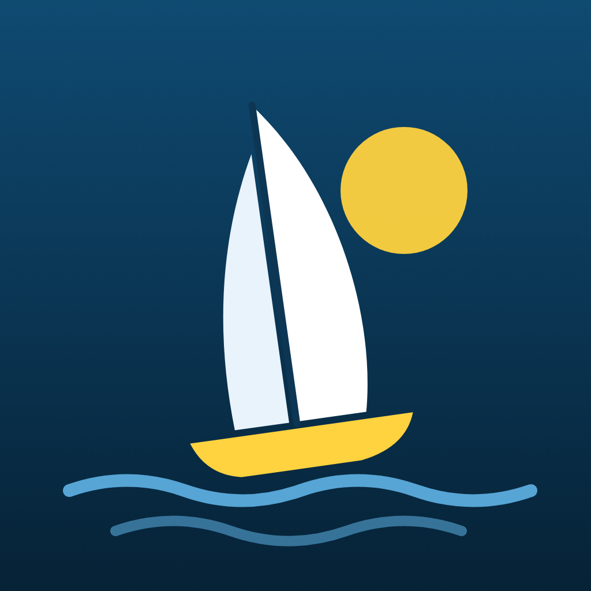

Regatta RivalsRegatta Rivals: Privacy Policy
Last updated: 14 October 2026
Regatta Rivals ("the app") is made by Firth Labs ("we", "us"). This policy explains what information the app uses and why. We've kept the app's data use to the minimum needed to run it.
Playing offline (career mode)
Your career (name, chosen nation, results and progress) is stored only on your device. It is not sent to us or anyone else. Deleting the app deletes it.
Playing online (online regattas and live racing)
If you choose to play online, the app sends the following to our game server:
- The name and nation you choose for the leaderboards. Use a nickname if you prefer; it does not need to be your real name.
- A random player ID and secret key generated by our server, so your results stay yours. These are not linked to your phone, your Google account or any other identity.
- Your race results: finish time, penalties, and a recording of your boat's track during the race. Your best run's track is shown to other players as a "ghost" boat, along with your chosen name and nation.
- Live races: while you race live, your steering and sail controls are sent to the server, which shares your boat's position with the other players in that race. We keep each live race's finishing positions, your ranked points, experience (XP), level and chosen boat colour, which are shown on the leaderboards with your name and nation. Private races with friends are not ranked and award no points.
The server also briefly sees your internet (IP) address when the app connects, as every internet service does. We use it only to protect the server against abuse (rate limiting) and do not store it with your results.
Unless you choose to sign in with Google (below), we do not collect your email address. We never collect your contacts, location, photos, microphone, or any advertising identifiers. The app contains no advertising and no third-party analytics or tracking.
Signing in with Google (optional)
You can choose to sign in with your Google account in Settings, to back up your progress and restore it on a new phone. If you do, we receive from Google your Google account ID and email address (and your first name, used only as a default sailing name). We store them with your online profile, together with a cloud copy of your career (the same career data described above). We use them only to recognise you when you sign in and to restore your progress. We never see your Google password, and we don't use your email to contact you or share it with anyone. You can sign out at any time in Settings.
Subscriptions
Premium subscriptions are bought and managed through Google Play. We do not see or store your payment details. Google's privacy policy applies to the payment: https://policies.google.com/privacy
How long we keep online data
Online leaderboard entries and ghost tracks are kept so leaderboards stay viewable. You can ask us to delete your online profile and all of its results at any time (see below).
Children
The app is suitable for all ages and does not knowingly collect personal information from children. The only information sent online is a chosen display name, nation, and race results.
Your rights and deleting your data
To have your online profile and results deleted, or to ask any question about this policy, email regattarivals@gmail.com and tell us your online name (and nation). We'll delete it promptly.
Changes
If this policy changes, we'll update the date at the top and, for significant changes, mention it in the app.
Contact
Firth Labs · regattarivals@gmail.com